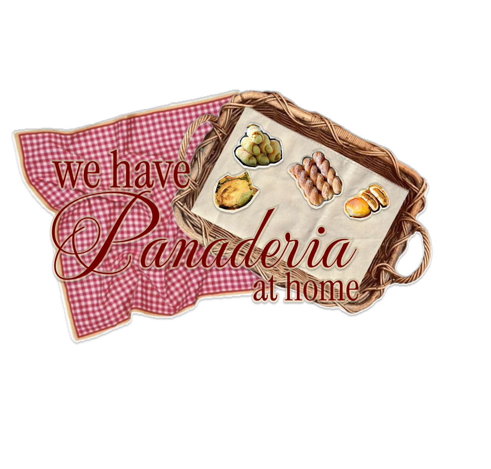
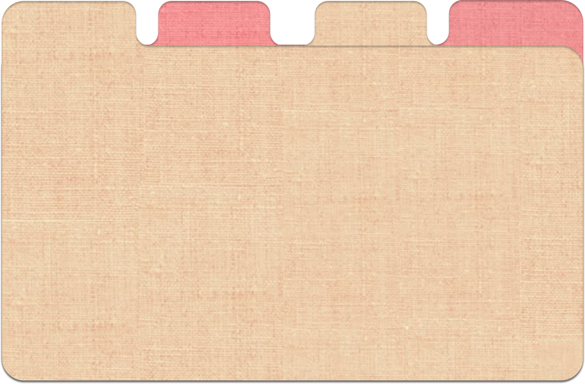
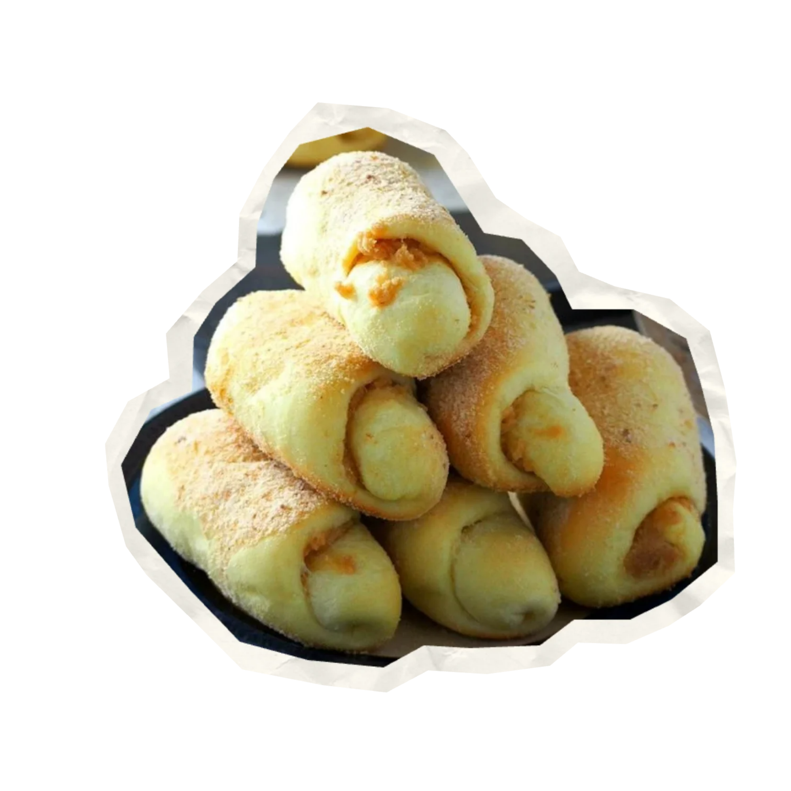
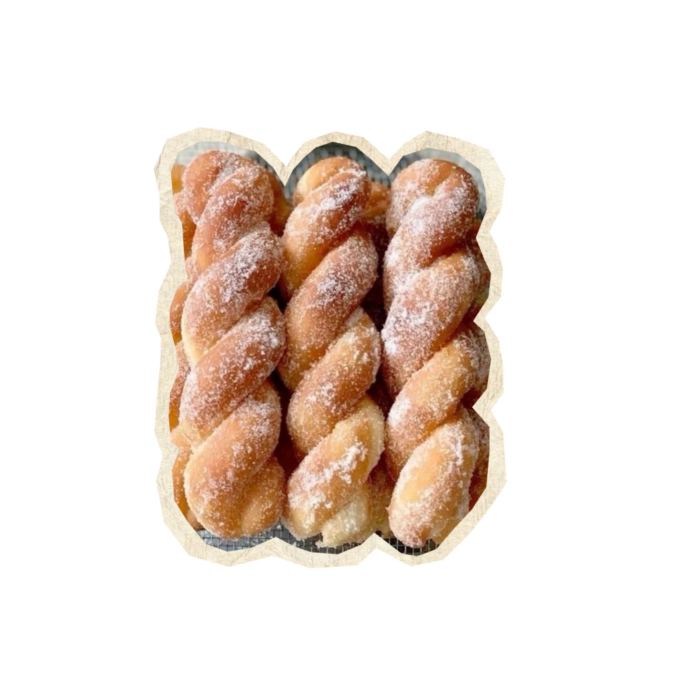
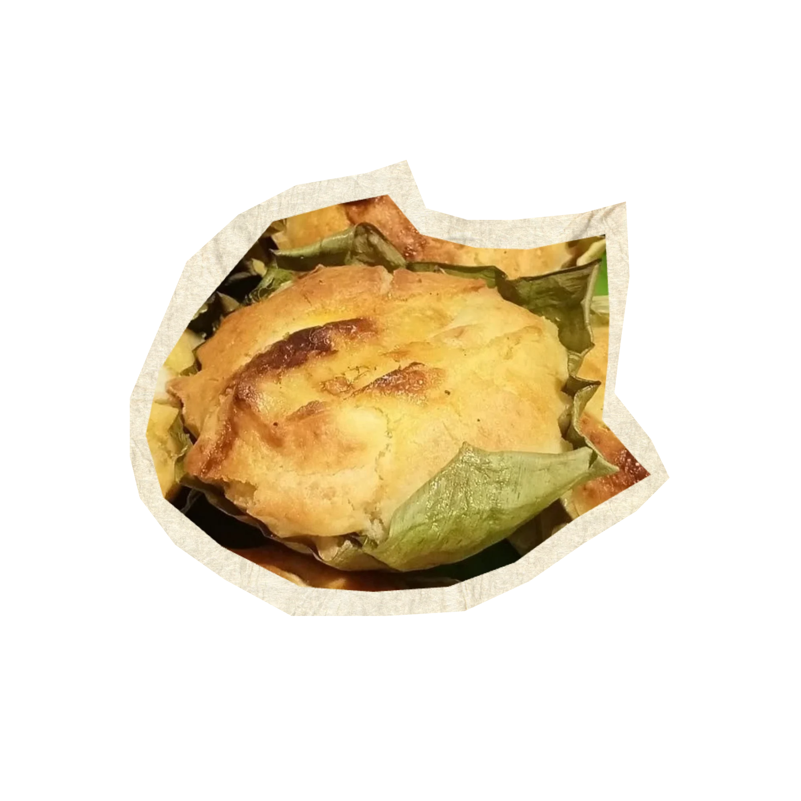

soft | buttery | sweet
A soft, pillowy Filipino bread filled with a sweet, buttery crumb mixture and baked until lightly golden. A classic merienda or breakfast favorite that pairs perfectly with coffee or hot chocolate.

crispy | caramelized | nostalgic
A soft, pillowy Filipino bread filled with a sweet, buttery crumb mixture and baked until lightly golden. A classic merienda or breakfast favorite that pairs perfectly with coffee or hot chocolate.

soft | creamy | traditional
A beloved Filipino rice cake traditionally enjoyed during the Christmas season. Soft and fragrant with a lightly toasted top, its especially delicious with butter, sugar, and grated cheese.